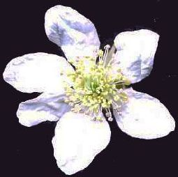
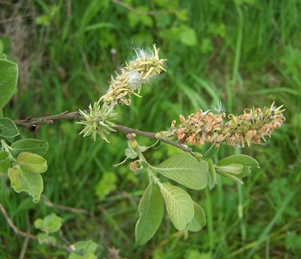
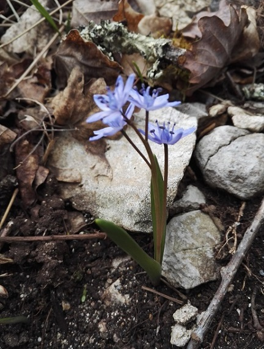
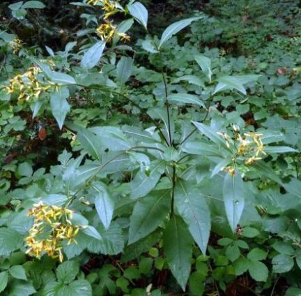
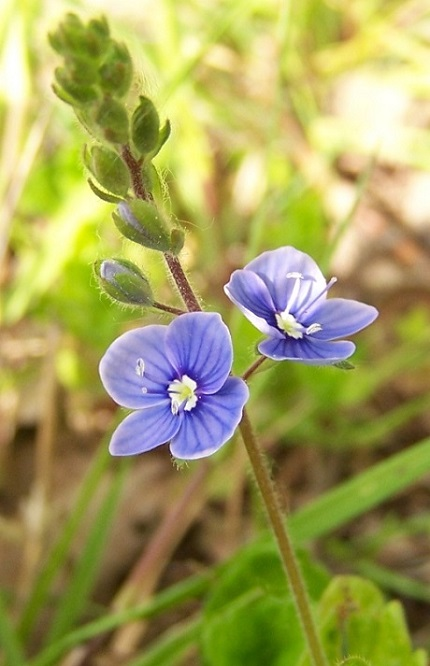
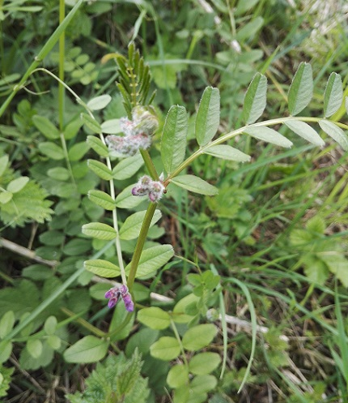

Noms latinsNoms françaisNoms vernaculairesSynonymesLe genre grammatical en BotaniqueCodes de nomenclature
Index
des noms français
Noms français pas encore standardisés.
A
B
C
D
E
F
G
H
I
J
K
L
M
N
O
P
Q
R
S
T
U
V
W
X
Y
Z
R 
- Raiponce en épi
Raiponce orbiculaire
Raisin d'Amérique
Ravenelle
Ray grass anglais
Reine des prés
Renoncule âcre
Renoncule à feuilles capillaires
Renoncule à feuilles d'aconit
Renoncule à feuilles d'ophioglosse
Renoncule à tête d'or
Renoncule bulbeuse
Renoncule de Drouet
Renoncule de Sardaigne
Renoncule flottante
Renoncule langue
Renoncule rampante
Renoncule scélérate
Renouée à feuilles de Patience
Renouée bistorte
Renouée d'Aubert,
Renouée de Chine
Renouée des oiseaux
Renouée du Japon
Renouée-liseron
Renouée persicaire
Renouée poivre d'eau
Réséda des teinturiers
Réséda jaunâtre
Réséda jaune
Rhinanthe crête de coq
Robinier faux-acacia
Ronce blanchâtre
(ou ronce de l'Etna ?)

Fleur de Rubus canescens Ronce bleuâtre
Roseau, roseau commun
Roseau des bois
Rossolis à feuilles rondes
Rossolis intermédiaire
Rubanier dressé
Rubanier émergé
Rubéole des champs
Rue des murailles
Rue fétide
Rue officinale
Rumex crépu
Rumex petite oseille
S
-
Sabline à feuilles étroites ou à petites feuilles
Sabline à trois nervures
Safran
Safran bâtard
Sagittaire en flèche
Sainfoin
Salicaire
Salsifis à feuilles de poireau
salsifis cultivé
Salsifis des prés
Sanicle d'Europe
Sanicule
Sapin de Douglas
Saponaire officinale
Sarrasin
Sarrette des teinturiers
Sarriette commune
Sauge des prés
Saule cendré
Saule fragile
Saule marsault

Chatons femelles - 15 mai 2010 Saule pourpre
Saule rampant
Savonnier
Saxifrage à trois-doigts
Saxifrage granulifère
Scabieuse colombaire
Sceau de Salomon multiflore
Sceau de Salomon odorant
Sceau de Salomon officinal
Scille à deux feuilles

Saint-Moré, 8 mars 2019 Scille d'automne
Scille penchée
Scirpe des bois
Scolopendre
Scrophulaire aquatique
Scrophulaire noueuse
Scutellaire à casque
Sébestier
Sédum âcre
Séneçon à feuilles de Roquette
Séneçon commun
Séneçon de Fuchs

Dans le Morvan, été 2015 Seneçon de Mazamet
Séneçon des marais
Seneçon du Cap
Séneçon jacobée
Sénevé
Sensitive
Séquoia de Chine
Serpolet couché
Serratule des teinturiers
Séséli des montagnes
Seslérie blanchâtre, seslérie bleue
Sétaire verte
Shérardie des champs
Sieglingie retombante
Silaüs des prés
Silène à bouquets
Silène à feuilles larges,
Silène à larges feuilles
Silène commun
Silène fleur de coucou
Silène penché
Sison,
Sison amome,
Sison aromatique
Sisymbre de Loesel
Sisymbre irio
Sisymbre officinal
Solidage du Canada
Solidage glabre
Sorbier
Sorbier des oiseaux
Sorbier des oiseleurs
Souci des champs
Spéculaire
Spargoute des champs
Spergulaire rouge
Spergule des champs
Sphaigne des marais
Spinulum interrompu
Spiranthe d'automne,
spiranthe spiralée
Stellaire des bois
Stellaire des sources
Stellaire graminée
Stellaire holostée (bec d'oyseau) *
Stellaire intermédiaire
Stipe pennée
Stramoine
Succise des prés
Sumac Amarante,
Sumac hérissé
Sureau à grappes,
Sureau de montagne
Sureau hièble
Sureau noir
T
- Tabouret des montagnes
Tamier commun
Tanaisie
Téesdalie à tige nue
Théliptéris des marécages
Thélyptéris des marais
Thésium couché
Thym précoce
Tilleul à grandes feuilles
Tilleul des bois
Tordyle majeur
Torilis des champs
Torilis du Japon
Torilis noueux
Trèfle commun
Trèfle d'eau
Trèfle des champs
Trèfle douteux
Trèfle fraise,
trèfle fraisier
Trèfle jaune champêtre
Trèfle rampant
Trèfle pourpré
Trèfle rougeâtre (sousperantvin) *
Tremble
Trinia vulgaire
Trinie glauque
Trinie commune
Troène
Troène vulgaire
Tubéraire tachetée
Tulipe de Gaule
Tulipe des bois
Tulipier de Virginie
Tussilage
U
V
-
Valériane officinale
Vanille
Vélaret
Vélar irio
Vélar odorant
Vélar officinal
Verge d'or
Verge d'or tardive
Vergerette annuelle
Vergerette du Canada
Verne
Véronique à écus, véronique à écusson
Véronique à feuilles de Lierre
Véronique à feuilles de Serpolet
Véronique agreste
Véronique de Perse
Véronique des ruisseaux
Véronique mâle
Véronique officinale
Véronique Petit-chêne
(Ne me obliez mie) *

Les Bries, 29 avril 2010 Véronique des montagne
Véronique précoce
Verveine officinale
Vesce à feuilles étroites
Vesce à quatre graines
Vesce craque
Vesce cultivée (jarveau) *
Vesce de Russie
Vesce des haies

Auxerre, Coulée Verte,
sortie AIB du 15 avril 2018 Vesce des moissons
Vesce hérissée
Vigne cultivée
Vigne-vierge à trois pointes
Violette à feuilles de pêcher
Violette de Cry
Violette de Reichenbach
Violette de Rivinus
Violette des bois
Violette des champs
Violette des marais
Violette hérissée
Violette odorante (viollete de Mars) *
Violette tricolore
Viorne commune
Viorne lantane
Vipérine commune
Vrillée de Bal'dzhuan
Vrillée de Chine
Vulpin des champs
Y
Merci à Marco Ponzi pour sa mise en ligne très botanique de cet ouvrage de Jean Bourdichon (vers 1468-1521), une mise en ligne que nous n'avons découverte qu'en 2024 et qui vient de nous aider à améliorer cette page.
Noms latinsNoms françaisNoms vernaculairesSynonymesLe genre grammatical en BotaniqueCodes de nomenclature
 | |